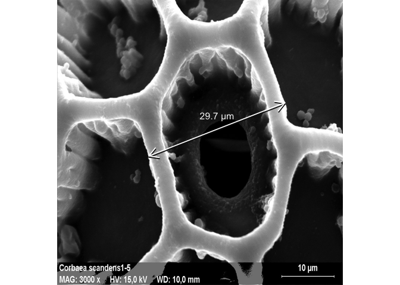
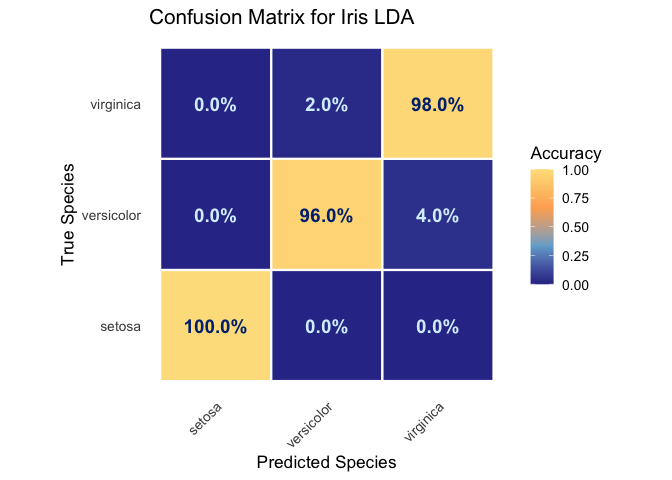

ggtwotone extends ggplot2 with dual-stroke and contrast-aware geoms that improve the visibility of annotations, curves, and labels on heterogeneous backgrounds. The package is designed for figures containing images, maps, heatmaps, microscopy data, or other complex visualizations where standard single-color annotations may become difficult to distinguish.
Documentation
Complete documentation, reference manuals, and additional examples are available at Reference Manual, or see them in the R help tab after loading the package.
Key Features
- Dual-stroke segments
- Dual-stroke curves and paths
- Dual-stroke regression lines
- Contrast-aware text labels
- Automatic highlight palettes
- WCAG/APCA-based color utilities
Why ggtwotone?
Standard annotations often become difficult to distinguish on complex or heterogeneous backgrounds, such as microscopy images, maps, photographs, or heatmaps. ggtwotone addresses this problem by combining dual-stroke rendering with contrast-aware color selection.
- Improved visibility
- Better accessibility
- Grayscale-friendly figures
- Publication-ready graphics
Installation
Development version
# install.packages("pak")
pak::pak("bwanniarachchige2/ggtwotone")(After CRAN release this section will simply become install.packages("ggtwotone").)
Quick Example
The example below demonstrates how geom_segment_dual() and geom_text_contrast() improve measurement overlays on a microscopy image.
library(ggtwotone)
library(magick)
img_path <- "man/figures/micro_image.jpg"
um_per_px <- 0.05 # <-- calibration: micrometers per pixel
bar_um <- 10 # scale bar length in micrometers
# Load image as a background grob
img <- magick::image_read(img_path)
w <- magick::image_info(img)$width
h <- magick::image_info(img)$height
bg <- grid::rasterGrob(img, width = unit(1, "npc"), height = unit(1, "npc"))
meas <- data.frame(
x = 0.3218, y = 0.4507, xend = 0.7974, yend = 0.6371 # <-- adjust to your line
)
# Compute physical length for the label
dx_px <- abs(meas$xend - meas$x) * w
dy_px <- abs(meas$yend - meas$y) * h
len_um <- sqrt(dx_px^2 + dy_px^2) * um_per_px
lab <- sprintf("%.1f \u00B5m", len_um)
# Midpoint for the label
xm <- (meas$x + meas$xend)/2
ym <- (meas$y + meas$yend)/2
lab_df <- data.frame(x = xm, y = ym + 0.05, label = lab)
#Plot
ggplot() +
# background SEM image
annotation_custom(bg, xmin = 0, xmax = 1, ymin = 0, ymax = 1) +
# measurement line with dual stroke
geom_segment_dual(
data = meas,
aes(x = x, y = y, xend = xend, yend = yend),
colour1 = "#0D0D0D",
colour2 = "#FFFFFF",
linewidth = 1.2,
lineend = "round",
arrow = grid::arrow(ends = "both", length = unit(0.18, "in"), type = "open")
) +
# measurement label (contrast-aware)
geom_text_contrast(
data = lab_df,
aes(x = x, y = y, label = label),
background = "#444444",
size = 4.2
) +
coord_fixed(xlim = c(0, 1), ylim = c(0, 1), expand = FALSE) +
theme_void()
Dual-stroke annotations remain clearly visible regardless of the local background, while labels automatically adapt to maintain contrast.
Image credit
SEM micrograph adapted from Marie Majaura, Own work, licensed under CC BY-SA 3.0. Used under the terms of the license.
Additional Example
The following example demonstrates geom_text_contrast() on a confusion matrix generated from a linear discriminant analysis (LDA) classifier fitted to the iris data. Text colours are selected automatically to maintain readability against tiles with different background colours.
library(dplyr)
library(ggplot2)
library(ggtwotone)
library(scales)
library(MASS)
set.seed(1)
# Fit LDA classifier on iris
iris_lda <- MASS::lda(
Species ~ Sepal.Length + Sepal.Width + Petal.Length + Petal.Width,
data = iris
)
iris_pred <- predict(iris_lda)$class
# Build confusion matrix
classes <- levels(iris$Species)
cm <- table(
True = iris$Species,
Predicted = iris_pred
) |>
as.data.frame()
cm <- cm |>
group_by(True) |>
mutate(
Accuracy = Freq / sum(Freq),
label = sprintf("%.1f%%", 100 * Accuracy)
)
# Palette and background colors for text contrast
pal <- c("#313695", "#74add1", "#fdae61", "#fee08b")
col_fun <- scales::col_numeric(
palette = pal,
domain = c(0, 1)
)
cm$fill_hex <- col_fun(cm$Accuracy)
# Plot
ggplot(cm, aes(Predicted, True)) +
geom_tile(aes(fill = Accuracy), color = "white", linewidth = 0.8) +
geom_text_contrast(
aes(label = label),
background = cm$fill_hex,
base_colour = "#004488",
method = "auto",
contrast = 4.5,
size = 5,
fontface = "bold"
) +
scale_fill_gradientn(
colours = pal,
limits = c(0, 1),
name = "Accuracy"
) +
coord_fixed() +
labs(
title = "Confusion Matrix for Iris LDA",
x = "Predicted Species",
y = "True Species"
) +
theme_minimal(base_size = 13) +
theme(
panel.grid = element_blank(),
axis.text.x = element_text(angle = 45, hjust = 1)
)
geom_text_contrast() automatically selects a readable foreground color for each label based on the tile background, improving readability while preserving the underlying color scale.
Citation
If you use ggtwotone in published work, please cite
citation("ggtwotone")(after the package is available on CRAN).